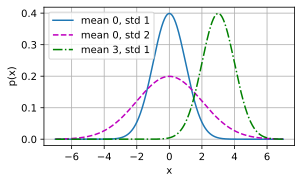

for optimization problem, we will usually define a loss function first. Once we have the loss function, we can use an optimization algorithm in attempt to minimize the loss.
a loss function is often referred to as the objective function of the optimization problem. - By tradition and convention most optimization algorithms are concerned with minimization. - - If we ever need to maximize an objective there is a simple solution: just flip the sign on the objective.
Linear Regression
Regression problems pop up whenever we want to predict a numerical value.
Common examples: predicting prices (of homes, stocks, etc.), predicting the length of stay (for patients in the hospital), forecasting demand (for retail sales)
Not every prediction problem is one of classical regression. Later on, we will introduce classification problems, where the goal is to predict membership among a set of categories.
example: suppose that we wish to estimate the prices of houses (in dollars) based on their area (in square feet) and age (in years).
to develop model for predicting house prices, need to get our hands on data, including the sales price, area, and age for each home.
In the terminology of machine learning, the dataset is called a training dataset or training set, and each row (containing the data corresponding to one sale) is called an example (or data point, instance, sample).
The thing we are trying to predict (price) is called a label (or target). The variables (age and area) upon which the predictions are based are called features (or covariates).
import mathimport torchimport numpy as npimport time
Basics
Linear regression is both the simplest and most popular among the standard tools for tackling regression problems.
First, assume that relationship between features \(\mathbf{x}\) and target \(y\) is approximately linear, i.e., that the conditional mean \(E[Y \mid X=\mathbf{x}]\) can be expressed as a weighted sum of the features \(\mathbf{x}\).
allows that the target value may still deviate from its expected value on account of observation noise.
Next, impose assumption that any such noise is well behaved, following a Gaussian distribution.
we will use \(n\) to denote the number of examples in our dataset. We use superscripts to enumerate samples and targets, and subscripts to index coordinates.
More concretely, \(\mathbf{x}^{(i)}\) denotes the \(i^{\textrm{th}}\) sample and \(x_j^{(i)}\) denotes its \(j^{\textrm{th}}\) coordinate.
Model
At the heart of every solution is a model that describes how features can be transformed into an estimate of the target.
The assumption of linearity means that the expected value of the target (price) can be expressed as a weighted sum of the features (area and age):
Here \(w_{\textrm{area}}\) and \(w_{\textrm{age}}\) are called weights, and \(b\) is called a bias (or offset or intercept).
The weights determine the influence of each feature on our prediction. The bias determines the value of the estimate when all features are zero.
Even though we will never see any newly-built homes with precisely zero area, we still need the bias because it allows us to express all linear functions of our features (rather than restricting us to lines that pass through the origin).
Strictly speaking, :eqref:eq_price-area is an affine transformation of input features, which is characterized by a linear transformation of features via a weighted sum, combined with a translation via the added bias.
Given a dataset, our goal is to choose the weights \(\mathbf{w}\) and the bias \(b\) that, on average, make our model’s predictions fit the true prices observed in the data as closely as possible.
In disciplines where it is common to focus on datasets with just a few features, explicitly expressing models long-form, as in :eqref:eq_price-area, is common.
In machine learning, we usually work with high-dimensional datasets,where it is more convenient to employ compact linear algebra notation.
When inputs consist of \(d\) features, we can assign each an index (between \(1\) and \(d\)) and express our prediction \(\hat{y}\) (in general the “hat” symbol denotes an estimate) as
\[\hat{y} = w_1 x_1 + \cdots + w_d x_d + b.\]
Collecting all features into a vector \(\mathbf{x} \in \mathbb{R}^d\) and all weights into a vector \(\mathbf{w} \in \mathbb{R}^d\), we can express our model compactly via the dot product between \(\mathbf{w}\) and \(\mathbf{x}\):
In :eqref:eq_linreg-y, the vector \(\mathbf{x}\) corresponds to the features of a single example.
We will often find it convenient to refer to features of our entire dataset of \(n\) examples via the design matrix\(\mathbf{X} \in \mathbb{R}^{n \times d}\).
Here, \(\mathbf{X}\) contains one row for every example and one column for every feature.
For a collection of features \(\mathbf{X}\), the predictions \(\hat{\mathbf{y}} \in \mathbb{R}^n\) can be expressed via the matrix–vector product:
\[{\hat{\mathbf{y}}} = \mathbf{X} \mathbf{w} + b,\] :eqlabel:eq_linreg-y-vec - where broadcasting is applied during the summation.
Given features of a training dataset \(\mathbf{X}\) and corresponding (known) labels \(\mathbf{y}\)
the goal of linear regression is to find the weight vector \(\mathbf{w}\) and the bias term \(b\) such that
given features of a new data example sampled from the same distribution as \(\mathbf{X}\), the new example’s label will (in expectation) be predicted with the smallest error.
Even if we believe that the best model for predicting \(y\) given \(\mathbf{x}\) is linear, we would not expect to find a real-world dataset of \(n\) examples where \(y^{(i)}\) exactly equals {(i)}+b$ for all \(1 \leq i \leq n\).
For example, whatever instruments we use to observe the features \(\mathbf{X}\) and labels \(\mathbf{y}\), there might be a small amount of measurement error.
–> even when we are confident that the underlying relationship is linear, we will incorporate a noise term to account for such errors.
Before we can go about searching for the best parameters (or model parameters) \(\mathbf{w}\) and \(b\), we will need two more things:
a measure of the quality of some given model;
and (ii) a procedure for updating the model to improve its quality.
Loss Function
fitting our model to the data requires that we agree on some measure of fitness (or, equivalently, of unfitness).
Loss functions quantify the distance between the real and predicted values of the target.
The loss will usually be a nonnegative number where smaller values are better and perfect predictions incur a loss of 0.
For regression problems, the most common loss function is the squared error. When our prediction for an example \(i\) is \(\hat{y}^{(i)}\) and the corresponding true label is \(y^{(i)}\), the squared error is given by:
\[l^{(i)}(\mathbf{w}, b) = \frac{1}{2} \left(\hat{y}^{(i)} - y^{(i)}\right)^2.\] :eqlabel:eq_mse
constant \(\frac{1}{2}\) makes no real difference but proves to be notationally convenient, since it cancels out when we take the derivative of the loss.
training dataset is given to us, and thus is out of our control, the empirical error is only a function of the model parameters. In :numref:fig_fit_linreg, we visualize the fit of a linear regression model in a problem with one-dimensional inputs.
:label:fig_fit_linreg
Note that large differences between estimates \(\hat{y}^{(i)}\) and targets \(y^{(i)}\) lead to even larger contributions to the loss, due to its quadratic form (this quadraticity can be a double-edge sword; while it encourages the model to avoid large errors it can also lead to excessive sensitivity to anomalous data).
To measure the quality of a model on the entire dataset of \(n\) examples, we simply average (or equivalently, sum) the losses on the training set:
\[L(\mathbf{w}, b) =\frac{1}{n}\sum_{i=1}^n l^{(i)}(\mathbf{w}, b) =\frac{1}{n} \sum_{i=1}^n \frac{1}{2}\left(\mathbf{w}^\top \mathbf{x}^{(i)} + b - y^{(i)}\right)^2.\]
When training the model, we seek parameters (\(\mathbf{w}^*, b^*\)) that minimize the total loss across all training examples:
Unlike most of the models that we will cover, linear regression presents us with a surprisingly easy optimization problem.
we can find the optimal parameters (as assessed on the training data) analytically by applying a simple formula as follows.
subsume the bias \(b\) into the parameter \(\mathbf{w}\) by appending a column to the design matrix consisting of all 1s.
Then our prediction problem is to minimize \(\|\mathbf{y} - \mathbf{X}\mathbf{w}\|^2\). As long as the design matrix \(\mathbf{X}\) has full rank (no feature is linearly dependent on the others), then there will be just one critical point on the loss surface and it corresponds to the minimum of the loss over the entire domain.
Taking the derivative of the loss with respect to \(\mathbf{w}\) and setting it equal to zero yields:
will only be unique when the matrix \(\mathbf X^\top \mathbf X\) is invertible, i.e., when the columns of the design matrix are linearly independent.
simple problems like linear regression may admit analytic solutions
Although analytic solutions allow for nice mathematical analysis, the requirement of an analytic solution is so restrictive that it would exclude almost all exciting aspects of deep learning.
Minibatch Stochastic Gradient Descent
even in cases where we cannot solve the models analytically, we can still often train models effectively in practice.
for many tasks, those hard-to-optimize models turn out to be so much better that figuring out how to train them ends up being well worth the trouble.
key technique for optimizing nearly every deep learning model: algorithm is called gradient descent.
most naive application of gradient descent consists of taking the derivative of the loss function, which is an average of the losses computed on every single example in the dataset.
In practice, this can be extremely slow: we must pass over the entire dataset before making a single update, even if the update steps might be very powerful :cite:Liu.Nocedal.1989.
Even worse, if there is a lot of redundancy in the training data, the benefit of a full update is limited.
The other extreme is to consider only a single example at a time and to take update steps based on one observation at a time.
The resulting algorithm, stochastic gradient descent (SGD) can be an effective strategy :cite:Bottou.2010, even for large datasets.
Unfortunately, SGD has drawbacks, both computational and statistical. One problem arises from the fact that processors are a lot faster multiplying and adding numbers than they are at moving data from main memory to processor cache.
It is up to an order of magnitude more efficient to perform a matrix–vector multiplication than a corresponding number of vector–vector operations.
This means that it can take a lot longer to process one sample at a time compared to a full batch.
A second problem is that some of the layers, such as batch normalization (to be described in :numref:sec_batch_norm), only work well when we have access to more than one observation at a time.
The solution to both problems is to pick an intermediate strategy: rather than taking a full batch or only a single sample at a time, we take a minibatch of observations :cite:Li.Zhang.Chen.ea.2014.
The specific choice of the size of the said minibatch depends on many factors, such as the amount of memory, the number of accelerators, the choice of layers, and the total dataset size.- Despite all that, a number between 32 and 256, preferably a multiple of a large power of \(2\), is a good start.
This leads us to minibatch stochastic gradient descent.
In its most basic form, in each iteration \(t\), we first randomly sample a minibatch \(\mathcal{B}_t\) consisting of a fixed number \(|\mathcal{B}|\) of training examples.
We then compute the derivative (gradient) of the average loss on the minibatch with respect to the model parameters. Finally, we multiply the gradient by a predetermined small positive value \(\eta\), called the learning rate, and subtract the resulting term from the current parameter values.
In summary, minibatch SGD proceeds as follows: (i) initialize the values of the model parameters, typically at random; (ii) iteratively sample random minibatches from the data, updating the parameters in the direction of the negative gradient. For quadratic losses and affine transformations, this has a closed-form expansion:
\[\begin{aligned} \mathbf{w} & \leftarrow \mathbf{w} - \frac{\eta}{|\mathcal{B}|} \sum_{i \in \mathcal{B}_t} \partial_{\mathbf{w}} l^{(i)}(\mathbf{w}, b) && = \mathbf{w} - \frac{\eta}{|\mathcal{B}|} \sum_{i \in \mathcal{B}_t} \mathbf{x}^{(i)} \left(\mathbf{w}^\top \mathbf{x}^{(i)} + b - y^{(i)}\right)\\ b &\leftarrow b - \frac{\eta}{|\mathcal{B}|} \sum_{i \in \mathcal{B}_t} \partial_b l^{(i)}(\mathbf{w}, b) && = b - \frac{\eta}{|\mathcal{B}|} \sum_{i \in \mathcal{B}_t} \left(\mathbf{w}^\top \mathbf{x}^{(i)} + b - y^{(i)}\right). \end{aligned}\] :eqlabel:eq_linreg_batch_update
Since we pick a minibatch \(\mathcal{B}\) we need to normalize by its size \(|\mathcal{B}|\). Frequently minibatch size and learning rate are user-defined. Such tunable parameters that are not updated in the training loop are called hyperparameters.
They can be tuned automatically by a number of techniques, such as Bayesian optimization :cite:Frazier.2018. In the end, the quality of the solution is typically assessed on a separate validation dataset (or validation set).
After training for some predetermined number of iterations (or until some other stopping criterion is met), we record the estimated model parameters, denoted \(\hat{\mathbf{w}}, \hat{b}\).
Note that even if our function is truly linear and noiseless, these parameters will not be the exact minimizers of the loss, nor even deterministic.
Although the algorithm converges slowly towards the minimizers it typically will not find them exactly in a finite number of steps.
Moreover, the minibatches \(\mathcal{B}\) used for updating the parameters are chosen at random. This breaks determinism.
Linear regression happens to be a learning problem with a global minimum (whenever \(\mathbf{X}\) is full rank, or equivalently, whenever \(\mathbf{X}^\top \mathbf{X}\) is invertible).
However, the loss surfaces for deep networks contain many saddle points and minima. Fortunately, we typically do not care about finding an exact set of parameters but merely any set of parameters that leads to accurate predictions (and thus low loss).
In practice, deep learning practitioners seldom struggle to find parameters that minimize the loss on training sets :cite:Izmailov.Podoprikhin.Garipov.ea.2018,Frankle.Carbin.2018.
The more formidable task is to find parameters that lead to accurate predictions on previously unseen data, a challenge called generalization.
Predictions
Given the model \(\hat{\mathbf{w}}^\top \mathbf{x} + \hat{b}\), we can now make predictions for a new example, e.g., predicting the sales price of a previously unseen house given its area \(x_1\) and age \(x_2\).
Deep learning practitioners have taken to calling the prediction phase inference but this is a bit of a misnomer—inference refers broadly to any conclusion reached on the basis of evidence, including both the values of the parameters and the likely label for an unseen instance.
If anything, in the statistics literature inference more often denotes parameter inference and this overloading of terminology creates unnecessary confusion when deep learning practitioners talk to statisticians.
In the following we will stick to prediction whenever possible.
Vectorization for Speed
When training our models, we typically want to process whole minibatches of examples simultaneously.
Doing this efficiently requires that (we) (should) (vectorize the calculations and leverage fast linear algebra libraries rather than writing costly for-loops in Python.)
To see why this matters so much, let’s (consider two methods for adding vectors.)
To start, we instantiate two 10,000-dimensional vectors containing all 1s.
In the first method, we loop over the vectors with a Python for-loop.
In the second, we rely on a single call to +.
n =10000a = torch.ones(n)b = torch.ones(n)
Now we can benchmark the workloads. First, [we add them, one coordinate at a time, using a for-loop.]
c = torch.zeros(n)t = time.time()for i inrange(n): c[i] = a[i] + b[i]f'{time.time() - t:.5f} sec'
'0.06740 sec'
(Alternatively, we rely on the reloaded + operator to compute the elementwise sum.)
t = time.time()d = a + bf'{time.time() - t:.5f} sec'
'0.00000 sec'
second method is dramatically faster than the first. Vectorizing code often yields order-of-magnitude speedups.
Moreover, we push more of the mathematics to the library so we do not have to write as many calculations ourselves, reducing the potential for errors and increasing portability of the code.
The Normal Distribution and Squared Loss
So far we have given a fairly functional motivation of the squared loss objective:
the optimal parameters return the conditional expectation \(E[Y\mid X]\) whenever the underlying pattern is truly linear, and the loss assigns large penalties for outliers.
We can also provide a more formal motivation for the squared loss objective by making probabilistic assumptions about the distribution of noise.
Linear regression was invented at the turn of the 19th century.
While it has long been debated whether Gauss or Legendre first thought up the idea, it was Gauss who also discovered the normal distribution (also called the Gaussian). It turns out that the normal distribution and linear regression with squared loss share a deeper connection than common parentage.
To begin, recall that a normal distribution with mean \(\mu\) and variance \(\sigma^2\) (standard deviation \(\sigma\)) is given as
Below [we define a function to compute the normal distribution].
def normal(x, mu, sigma): p =1/ math.sqrt(2* math.pi * sigma**2)return p * np.exp(-0.5* (x - mu)**2/ sigma**2)
We can now (visualize the normal distributions).
from d2l import torch as d2limport matplotlib.pyplot as plt# Use NumPy again for visualizationx = np.arange(-7, 7, 0.01)# Mean and standard deviation pairsparams = [(0, 1), (0, 2), (3, 1)]d2l.plot(x, [normal(x, mu, sigma) for mu, sigma in params], xlabel='x', ylabel='p(x)', figsize=(4.5, 2.5), legend=[f'mean {mu}, std {sigma}'for mu, sigma in params])plt.show()

Note that changing the mean corresponds to a shift along the \(x\)-axis, and increasing the variance spreads the distribution out, lowering its peak.
One way to motivate linear regression with squared loss is to assume that observations arise from noisy measurements, where the noise \(\epsilon\) follows the normal distribution \(\mathcal{N}(0, \sigma^2)\):
\[y = \mathbf{w}^\top \mathbf{x} + b + \epsilon \textrm{ where } \epsilon \sim \mathcal{N}(0, \sigma^2).\]
Thus, we can now write out the likelihood of seeing a particular \(y\) for a given \(\mathbf{x}\) via
As such, the likelihood factorizes. According to the principle of maximum likelihood, the best values of parameters \(\mathbf{w}\) and \(b\) are those that maximize the likelihood of the entire dataset:
\[P(\mathbf y \mid \mathbf X) = \prod_{i=1}^{n} p(y^{(i)} \mid \mathbf{x}^{(i)}).\]
\[P(\mathbf y \mid \mathbf X) = \prod_{i=1}^{n} p(y^{(i)} \mid \mathbf{x}^{(i)}).\]
equality follows since all pairs \((\mathbf{x}^{(i)}, y^{(i)})\) were drawn independently of each other.
Estimators chosen according to the principle of maximum likelihood are called maximum likelihood estimators.
While, maximizing the product of many exponential functions, might look difficult, we can simplify things significantly, without changing the objective, by maximizing the logarithm of the likelihood instead.
For historical reasons, optimizations are more often expressed as minimization rather than maximization.
without changing anything, we can minimize the negative log-likelihood, which we can express as follows:
If we assume that \(\sigma\) is fixed, we can ignore the first term, because it does not depend on \(\mathbf{w}\) or \(b\).
The second term is identical to the squared error loss introduced earlier, except for the ultiplicative constant \(\frac{1}{\sigma^2}\).
Fortunately, the solution does not depend on \(\sigma\) either. It follows that minimizing the mean squared error is equivalent to the maximum likelihood estimation of a linear model under the assumption of additive Gaussian noise.
Linear Regression as a Neural Network
linear models not sufficiently rich to express the many complicated networks that we will introduce in this book
(artificial) neural networks are rich enough to subsume linear models as networks in which every feature is represented by an input neuron, all of which are connected directly to the output.
:numref:fig_single_neuron depicts linear regression as a neural network. The diagram highlights the connectivity pattern, such as how each input is connected to the output, but not the specific values taken by the weights or biases.
:label:fig_single_neuron
The inputs are \(x_1, \ldots, x_d\). We refer to \(d\) as the number of inputs or the feature dimensionality in the input layer. The output of the network is \(o_1\). Because we are just trying to predict a single numerical value, we have only one output neuron.
Note that the input values are all given. There is just a single computed neuron. In summary, we can think of linear regression as a single-layer fully connected neural network.
We will encounter networks with far more layers in later chapters.
Summary
introduced traditional linear regression, where the parameters of a linear function are chosen to minimize squared loss on the training set.
We also motivated this choice of objective both via some practical considerations and through an interpretation of linear regression as maximimum likelihood estimation under an assumption of linearity and Gaussian noise.
After discussing both computational considerations and connections to statistics, we showed how such linear models could be expressed as simple neural networks where the inputs are directly wired to the output(s).
While we will soon move past linear models altogether, they are sufficient to introduce most of the components that all of our models require:
parametric forms, differentiable objectives, optimization via minibatch stochastic gradient descent, and ultimately, evaluation on previously unseen data.
Exercises
Assume that we have some data \(x_1, \ldots, x_n \in \mathbb{R}\). Our goal is to find a constant \(b\) such that \(\sum_i (x_i - b)^2\) is minimized.
Find an analytic solution for the optimal value of \(b\).
How does this problem and its solution relate to the normal distribution?
What if we change the loss from \(\sum_i (x_i - b)^2\) to \(\sum_i |x_i-b|\)? Can you find the optimal solution for \(b\)?
Prove that the affine functions that can be expressed by \(\mathbf{x}^\top \mathbf{w} + b\) are equivalent to linear functions on \((\mathbf{x}, 1)\).
Assume that you want to find quadratic functions of \(\mathbf{x}\), i.e., \(f(\mathbf{x}) = b + \sum_i w_i x_i + \sum_{j \leq i} w_{ij} x_{i} x_{j}\). How would you formulate this in a deep network?
Recall that one of the conditions for the linear regression problem to be solvable was that the design matrix \(\mathbf{X}^\top \mathbf{X}\) has full rank.
What happens if this is not the case?
How could you fix it? What happens if you add a small amount of coordinate-wise independent Gaussian noise to all entries of \(\mathbf{X}\)?
What is the expected value of the design matrix \(\mathbf{X}^\top \mathbf{X}\) in this case?
What happens with stochastic gradient descent when \(\mathbf{X}^\top \mathbf{X}\) does not have full rank?
Assume that the noise model governing the additive noise \(\epsilon\) is the exponential distribution. That is, \(p(\epsilon) = \frac{1}{2} \exp(-|\epsilon|)\).
Write out the negative log-likelihood of the data under the model \(-\log P(\mathbf y \mid \mathbf X)\).
Can you find a closed form solution?
Suggest a minibatch stochastic gradient descent algorithm to solve this problem. What could possibly go wrong (hint: what happens near the stationary point as we keep on updating the parameters)? Can you fix this?
Assume that we want to design a neural network with two layers by composing two linear layers. That is, the output of the first layer becomes the input of the second layer. Why would such a naive composition not work?
What happens if you want to use regression for realistic price estimation of houses or stock prices?
Show that the additive Gaussian noise assumption is not appropriate. Hint: can we have negative prices? What about fluctuations?
Why would regression to the logarithm of the price be much better, i.e., \(y = \log \textrm{price}\)?
What do you need to worry about when dealing with pennystock, i.e., stock with very low prices? Hint: can you trade at all possible prices? Why is this a bigger problem for cheap stock? For more information review the celebrated Black–Scholes model for option pricing :cite:Black.Scholes.1973.
Suppose we want to use regression to estimate the number of apples sold in a grocery store.
What are the problems with a Gaussian additive noise model? Hint: you are selling apples, not oil.
The Poisson distribution captures distributions over counts. It is given by \(p(k \mid \lambda) = \lambda^k e^{-\lambda}/k!\). Here \(\lambda\) is the rate function and \(k\) is the number of events you see. Prove that \(\lambda\) is the expected value of counts \(k\).
Design a loss function associated with the Poisson distribution.
Design a loss function for estimating \(\log \lambda\) instead.
Goal of Optimization
optimization provides a way to minimize the loss function for deep learning, in essence, the goals of optimization and deep learning are fundamentally different.
optimization: concerned with minimizing an objective
deep learning: concerned with finding a suitable model, given a finite amount of data.
%matplotlib inlinefrom d2l import torch as d2limport numpy as npfrom mpl_toolkits import mplot3dimport torch
To illustrate the aforementioned different goals, let’s consider the empirical risk and the risk.
As described in :numref:subsec_empirical-risk-and-risk, the empirical risk is an average loss on the training dataset while the risk is the expected loss on the entire population of data.
Below we define two functions: the risk function f and the empirical risk function g. Suppose that we have only a finite amount of training data. As a result, here g is less smooth than f.
graph below illustrates that the minimum of the empirical risk on a training dataset may be at a different location from the minimum of the risk (generalization error).
focus specifically on the performance of optimization algorithms in minimizing the objective function, rather than a model’s generalization error.
In :numref:sec_linear_regression we distinguished between analytical solutions and numerical solutions in optimization problems.
In deep learning, most objective functions are complicated and do not have analytical solutions. Instead, we must use numerical optimization algorithms.
The optimization algorithms in this chapter all fall into this category.
There are many challenges in deep learning optimization. Some of the most vexing ones are local minima, saddle points, and vanishing gradients. Let’s have a look at them.
Local Minima
For any objective function \(f(x)\), if the value of \(f(x)\) at \(x\) is smaller than the values of \(f(x)\) at any other points in the vicinity of \(x\), then \(f(x)\) could be a local minimum.
If the value of \(f(x)\) at \(x\) is the minimum of the objective function over the entire domain, then \(f(x)\) is the global minimum.
For example, given the function
\[f(x) = x \cdot \textrm{cos}(\pi x) \textrm{ for } -1.0 \leq x \leq 2.0,\]
we can approximate the local minimum and global minimum of this function.
objective function of deep learning models usually has many local optima.
When the numerical solution of an optimization problem is near the local optimum, the numerical solution obtained by the final iteration may only minimize the objective function locally, rather than globally, as the gradient of the objective function’s solutions approaches or becomes zero.
Only some degree of noise might knock the parameter out of the local minimum. In fact, this is one of the beneficial properties of minibatch stochastic gradient descent where the natural variation of gradients over minibatches is able to dislodge the parameters from local minima.
Saddle Points
Besides local minima, saddle points are another reason for gradients to vanish. A saddle point is any location where all gradients of a function vanish but which is neither a global nor a local minimum.
Consider the function \(f(x) = x^3\). Its first and second derivative vanish for \(x=0\). Optimization might stall at this point, even though it is not a minimum.
Saddle points in higher dimensions are even more insidious, as the example below shows. Consider the function \(f(x, y) = x^2 - y^2\). It has its saddle point at \((0, 0)\). This is a maximum with respect to \(y\) and a minimum with respect to \(x\). Moreover, it looks like a saddle, which is where this mathematical property got its name.
We assume that the input of a function is a \(k\)-dimensional vector and its output is a scalar, so its Hessian matrix will have \(k\) eigenvalues.
The solution of the function could be a local minimum, a local maximum, or a saddle point at a position where the function gradient is zero:
When the eigenvalues of the function’s Hessian matrix at the zero-gradient position are all positive, we have a local minimum for the function.
When the eigenvalues of the function’s Hessian matrix at the zero-gradient position are all negative, we have a local maximum for the function.
When the eigenvalues of the function’s Hessian matrix at the zero-gradient position are negative and positive, we have a saddle point for the function.
For high-dimensional problems the likelihood that at least some of the eigenvalues are negative is quite high. This makes saddle points more likely than local minima. We will discuss some exceptions to this situation in the next section when introducing convexity. In short, convex functions are those where the eigenvalues of the Hessian are never negative. Sadly, though, most deep learning problems do not fall into this category. Nonetheless it is a great tool to study optimization algorithms.
Vanishing Gradients
Probably the most insidious problem to encounter is the vanishing gradient. Recall our commonly-used activation functions and their derivatives in :numref:subsec_activation-functions. For instance, assume that we want to minimize the function \(f(x) = \tanh(x)\) and we happen to get started at \(x = 4\). As we can see, the gradient of \(f\) is close to nil.
More specifically, \(f'(x) = 1 - \tanh^2(x)\) and thus \(f'(4) = 0.0013\). Consequently, optimization will get stuck for a long time before we make progress. This turns out to be one of the reasons that training deep learning models was quite tricky prior to the introduction of the ReLU activation function.
As we saw, optimization for deep learning is full of challenges. Fortunately there exists a robust range of algorithms that perform well and that are easy to use even for beginners. Furthermore, it is not really necessary to find the best solution. Local optima or even approximate solutions thereof are still very useful.
Summary
Minimizing the training error does not guarantee that we find the best set of parameters to minimize the generalization error.
The optimization problems may have many local minima.
The problem may have even more saddle points, as generally the problems are not convex.
Vanishing gradients can cause optimization to stall. Often a reparametrization of the problem helps. Good initialization of the parameters can be beneficial, too.
Exercises
Consider a simple MLP with a single hidden layer of, say, \(d\) dimensions in the hidden layer and a single output. Show that for any local minimum there are at least \(d!\) equivalent solutions that behave identically.
Assume that we have a symmetric random matrix \(\mathbf{M}\) where the entries \(M_{ij} = M_{ji}\) are each drawn from some probability distribution \(p_{ij}\). Furthermore assume that \(p_{ij}(x) = p_{ij}(-x)\), i.e., that the distribution is symmetric (see e.g., :citet:Wigner.1958 for details).
Prove that the distribution over eigenvalues is also symmetric. That is, for any eigenvector \(\mathbf{v}\) the probability that the associated eigenvalue \(\lambda\) satisfies \(P(\lambda > 0) = P(\lambda < 0)\).
Why does the above not imply \(P(\lambda > 0) = 0.5\)?
What other challenges involved in deep learning optimization can you think of?
Assume that you want to balance a (real) ball on a (real) saddle.
Why is this hard?
Can you exploit this effect also for optimization algorithms?
 :label:
:label: :label:
:label: